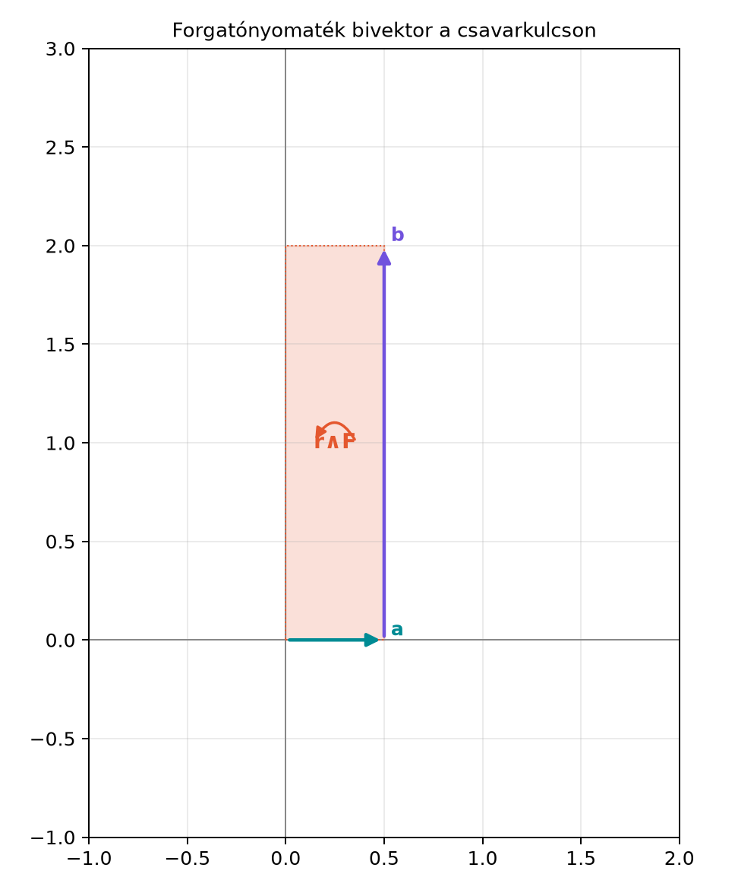

17.1 Forgatónyomaték és
impulzusmomentum bivektorként
17.1.1 Motiváció
A hagyományos mechanikában a forgatónyomatékot
vektorként definiáljuk. Ennek a vektornak az iránya a forgástengelyt
adja meg, a hossza pedig a forgató hatás erősségét. Ez a leírás három
dimenzióban működik, de elrejti a legfontosabb geometriai tényt: a
forgatásnak nincs kitüntetett iránya, hanem síkja van. Amikor egy
csavarkulcsot az asztal síkjában forgatunk, a forgás az asztal síkjában
történik, és a „tengely” csak egy merőlegesként jelenik meg. Ráadásul a
vektoriális szorzat csak három dimenzióban értelmezhető, tükrözésre
pedig pszeudovektorként viselkedik, ami zavarokat okozhat. A geometriai
algebra a forgatónyomatékot és az impulzusmomentumot bivektorként
kezeli: egy irányított síkdarabként, amely természetesen kódolja a
forgatás síkját, irányát és nagyságát.
17.1.2 Szemléletes kép: csavarkulcs
az asztalon
Képzeljünk el egy csavarkulcsot, amelynek nyele az
tengely mentén
m hosszú, és a végénél az
irányban
N erővel húzunk. A forgatás az
síkban történik, az óramutató járásával ellentétes irányban. Az erő és
az erőkar által kifeszített síkdarab irányított területe adja a forgató
hatást; ennek nagysága
Nm. A hagyományos nyomatékvektor ennek a síkdarabnak a duálisa, amely a
síkra merőleges
irányba mutat. Az alábbi ábra a bivektort mutatja, ahol az erőt
lerövidítve, arányosan ábrázoljuk.

Forgatónyomaték bivektor a csavarkulcson
- Az r = 0,5 e1 erőkar és az F = 20 e2 erő által kifeszített irányított
sík az xy sík; az F vektort 2 egységként ábrázoljuk.
Az ábrán az
körüljárási irány adja a bivektor orientációját: ez az
síkban az óramutató járásával ellentétes irány, ami a duális vektor
irányát eredményezi. (A szöveg az ábra nélkül is érthető: a bivektor az
sík irányított területe, nagysága
Nm.)
17.1.3 Definíció: forgatónyomaték-
és impulzusmomentum-bivektor
Definíció. Legyen egy részecske helyvektora
,
impulzusa
,
és hasson rá
erő. Ekkor
az erő forgatónyomaték-bivektora (torque bivector)
;
a részecske impulzusmomentum-bivektora (angular
momentum bivector)
.
A hagyományos vektormennyiségek ezek duálisai:
ahol
a G(3) pszeudoskalárja. A Dualitás: bivektor ↔︎
normálvektor, a × b = −I(a∧b) alfejezet szerint ez a definíció
pontosan megegyezik a vektoriális szorzattal.
A bivektoros alak előnye, hogy a sík és az irányított nagyság
egyetlen objektumban van, és a definíció tetszőleges dimenzióban
érvényes, nem csak háromban. A forgatónyomaték-bivektor egysége
Newtonméter, de 2D-ben is értelmes: ott nincs duális vektor, mégis van
forgató hatás.
17.1.4 Kidolgozott példa:
csavarkulcs
Legyen
(méter),
(newton). A forgatónyomaték-bivektor:
A duális vektor, azaz a hagyományos
nyomatékvektor:
A Dualitás
összefoglalója alapján
,
tehát
Ez valóban a
tengely irányába mutató nyomatékvektor, összhangban a
jobbkéz-szabállyal.
Python-ellenőrzés a mini könyvtárral (feltételezzük, hogy a
modul elérhető):
A kimenet:
,
majd
.
(A kód a
metódust használja, amely a
értéket adja.)
17.1.5 Perdülettétel: a
forgatónyomaték hatása
Tétel (perdülettétel bivektoros alakja). Egy
részecskére ható
erő esetén az impulzusmomentum-bivektor időbeli változása:
Ez a hagyományos
egyenlet általánosítása.
Bizonyítás. Induljunk ki az
definícióból. A külső szorzat bilineáris, ezért az idő szerinti
deriválásra érvényes a szorzat szabály megfelelője (lásd a Vektor- és multivektor-értékű függvények deriválása;
körmozgás alfejezetet):
A
a sebesség
,
és az impulzus
.
Ezért az első tag:
mert egy vektor önmagával vett külső
szorzata nulla (a A külső szorzat szabályai
szerint). A második tag Newton második törvénye alapján
,
így
Ezzel az állítást beláttuk.
17.1.6 Megmaradás centrális
erőnél
Ha az erő centrális, azaz az erő egy pontból
(origóból) sugárirányban hat, akkor
alakú, tehát
párhuzamos
-rel.
Ekkor
így a perdülettétel szerint
azaz
állandó bivektor.
Mit jelent ez geometriailag? Mivel
konstans, a
és
vektorok minden időpillanatban ugyanazon
által reprezentált síkban fekszenek (pontosabban a mozgás során
soha nem hagyja el ezt a síkot, és mivel
nem változik, a pálya síkja rögzített). Ez a klasszikus eredmény:
centrális erőtérben a mozgás síkmozgás, és a területi sebesség
állandó.
Egy egyszerű pörgettyűmodellben egy tömegpont egyenletesen kering az
síkban
sugarú körön,
szögsebességgel. A helyvektor és az impulzus:
Az impulzusmomentum-bivektor:
Mivel
,
a második tag
,
így
A bivektor tehát időben állandó. A
hagyományos impulzusmomentum-vektor a duálisa:
a jól ismert képlet, amely a
síkra merőleges tengelyt jelöli. (A számolásnál kihasználtuk, hogy
.)
17.1.8 Tipikus hibák és
félreértések
Bivektor vagy vektor? A forgatónyomaték-bivektor
nem egy tengely, hanem irányított síkdarab. A vektoriális szorzat
ennek a duálisa, amely csak 3D-ben létezik. A kettőt nem szabad
összekeverni: a bivektor tükrözésre a sík orientációját megfordítja, míg
a duális vektor pszeudovektorként viselkedik.
Előjel a dualizálásnál. A könyv konvenciója szerint
a duális
.
Ezért a bivektor duálisa
,
tehát
.
Ha valaki a
előjelet használja, a kapott vektor ellentétes irányú lesz.
A
lépés. A perdülettétel bizonyításánál könnyű elfelejteni, hogy
a sebesség és az impulzus párhuzamosak, ezért külső szorzatuk nulla. Ez
a lépés nem azt jelenti, hogy a tag elhanyagolható, hanem hogy azonosan
nulla.
Sorrend a deriváltban. A külső szorzat
deriválásakor a
sorrend kötött; ha valaki megcseréli a tagokat, az előjelet is meg kell
változtatnia.
17.1.9 Feladatok
(Fogalmi) Magyarázd el, miért természetesebb a forgatónyomatékot
bivektorként megadni, mint hagyományos vektorként. Milyen esetben nem
létezik a hagyományos vektoros alak?
(Kézi számolás) Adott
(m) és
(N). Számítsd ki a forgatónyomaték-bivektort, majd annak duális
vektorát. Ellenőrizd az eredményt a hagyományos
vektoriális szorzattal.
(Levezetés) Bizonyítsd be, hogy ha egy részecskére centrális erő
hat, akkor az impulzusmomentum-bivektor megmarad, és a mozgás síkja
rögzített. Vezesd le a területi sebesség állandóságát is (azaz azt, hogy
az
bivektor időben állandó).
(Alkalmazás/Python) A
modullal számítsd ki a 2. feladat nyomaték-bivektorát és duálisát. A kód
tartalmazzon egy nyomtatást a bivektor együtthatóira.
17.1.10 Megoldások
A bivektoros alak a forgatás síkját és irányított erősségét adja,
nem szorul rá egy mesterségesen választott tengelyre. A vektoriális
szorzat csak
-ban
értelmezhető; síkban vagy magasabb dimenzióban nincs duális vektor, de a
bivektor létezik, így a forgatónyomaték például 2D-s robotikában is
természetesen leírható.
A külső szorzat:
Kifejtve:
Mivel
,
,
és
,
kapjuk:
A duális vektor:
A
,
,
azonosságok alapján:
A hagyományos vektoriális szorzat:
Az egyezés teljes.
Ha
,
akkor
,
így
.
A perdülettétel miatt
,
tehát
állandó. Mivel
bivektor, a reprezentált sík iránya és irányítása időben állandó, ezért
a helyvektor és az impulzus mindvégig ebben a síkban maradnak. A
területi sebesség bivektor
,
ami tehát szintén állandó. Ez Kepler második törvényének alapja.
A forgatónyomaték és az impulzusmomentum természetes geometriai
algebrai alakja bivektor:
,
illetve
.
Ezek irányított síkdarabok, amelyek a forgatás síkját és erősségét
kódolják. A hagyományos vektoros mennyiségek a duálisaik:
,
.
A perdülettétel levezetése:
.
Centrális erő esetén
,
ezért
megmarad, ami rögzíti a mozgás síkját. Ezt a perdület-bivektort és a
perdülettételt használjuk a Merev test forgása:
tehetetlenségi leképezés és Euler-egyenletek alfejezetben, valamint
a Centrális erő és bolygómozgás röviden
alfejezetben.
17.1.12 Források és ellenőrzési
hiányok
A klasszikus mechanika geometriai algebrai tárgyalása standard anyag,
lásd Doran–Lasenby, Geometric Algebra for Physicists, valamint
Hestenes munkái. A fejezet konvenciói (a duális előjelei, a bivektorok
reprezentációja) a könyv saját jelölési rendszerét követik. A
forrásokban a forgatónyomaték bivektor alakja általában megegyezik, de a
duális előjele a pszeudoskalár konvenciójától függ, ezért más könyvekkel
való összevetéskor ellenőrizni kell az
definícióját.